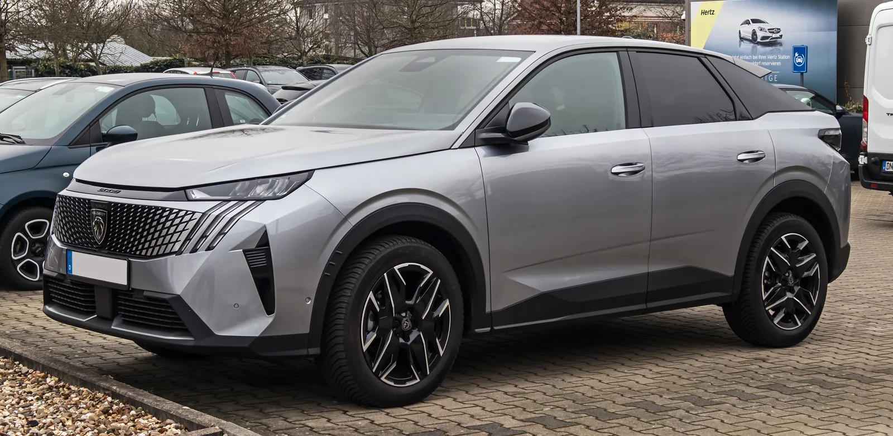
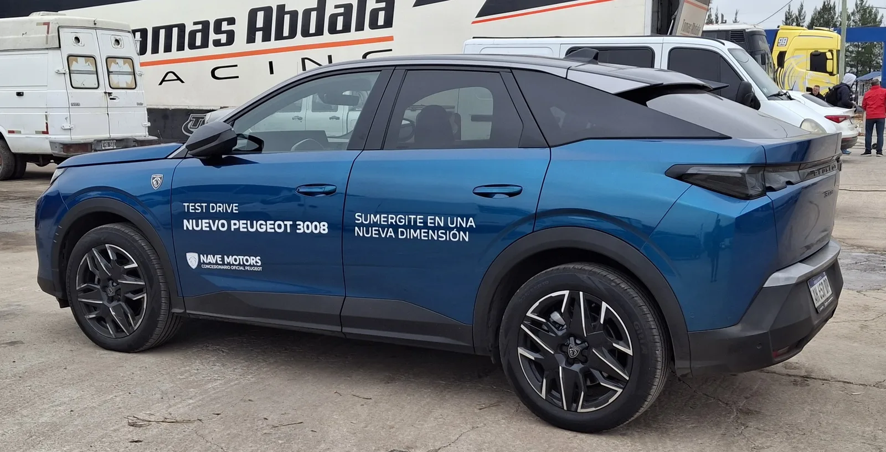
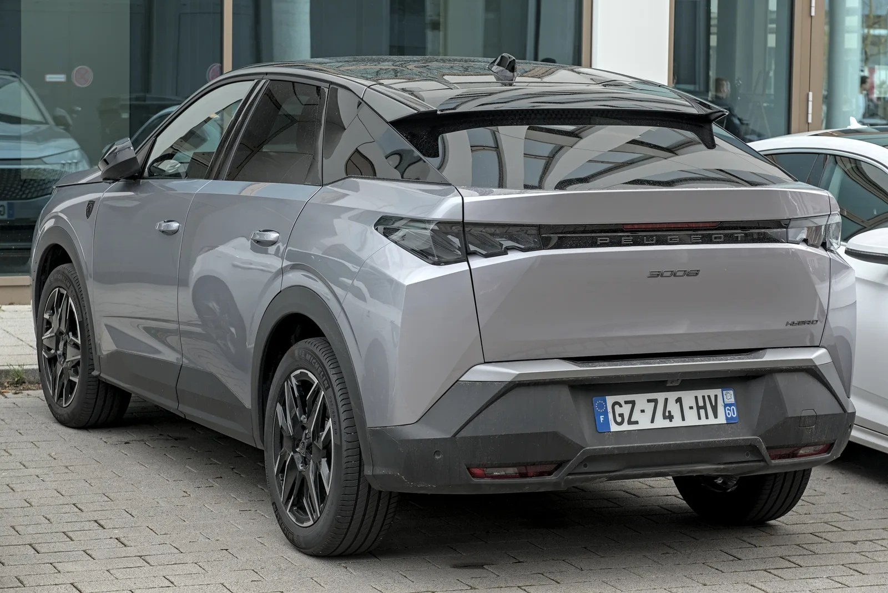
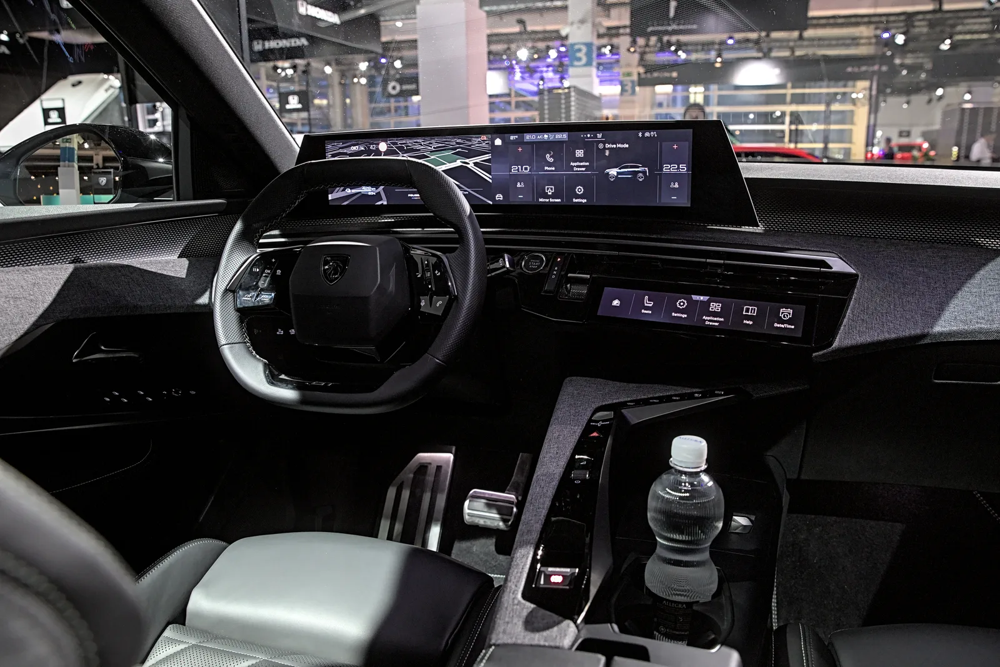

▲ 3세대로 넘어온 푸조 3008 스마트 하이브리드 — 새 패스트백 실루엣과 사자 발톱 모양 LED 주간주행등이 특징이다 ⓒ Wikimedia Commons (M 93, CC BY-SA 3.0 DE)
같은 값이면 이왕이면 더 예쁜 걸 산다는 말이 있다. 그런데 이 차는 더 예쁜데 값도 그대로다.
2025년 7월 국내에 상륙한 푸조 올 뉴 3008 스마트 하이브리드가 최근 한국자동차기자협회(KAJA)와 한국자동차전문기자협회(AWAK) 두 곳에서 나란히 '2026 올해의 디자인'으로 뽑혔다. 그것도 각각 7개 차종, 41개 차종과 겨룬 결과다.
정작 가격표는 8년 전 2세대 3008과 거의 동일한 수준으로 책정됐다. 3세대로 넘어오며 플랫폼, 파워트레인, 실내 디스플레이까지 통째로 바뀌었는데 말이다. 무엇이 바뀌었고, 실제로 그 값을 하는지 정리했다.
1. 왜 지금 3008인가 — 2관왕이 말해주는 것
두 기자단체의 평가 기준은 다르다. AWAK는 41개 차종을 대상으로 회원 투표를 진행했고, 3008은 디자인 부문에서 득표율 50%를 얻어 1위를 차지했다. KAJA는 별도로 '올해의 디자인' 후보 7개 차종을 추려 심사했는데, 여기서도 3008이 최종 수상 모델로 뽑혔다.
협회들이 공통으로 짚은 대목은 파노라믹 i-콕핏과 가격 경쟁력을 동시에 갖췄다는 점이다. 즉 디자인만 좋아서가 아니라, 이 가격대에서 이 정도 디자인·구성을 갖춘 차가 드물다는 평가가 함께 붙었다.

▲ 측면에서 본 3008 GT — 완만하게 떨어지는 쿠페형 루프라인이 '패스트백 SUV'라는 표현을 설명해준다 ⓒ Wikimedia Commons (Just a Man, CC BY 4.0)
2. 가격과 트림 — 알뤼르 vs GT, 뭐가 다른가
국내 판매 트림은 알뤼르(Allure)와 GT 두 가지다. 한불모터스는 '안심 가격 보장 제도'를 함께 운영해 전국 어느 전시장에서도 동일한 가격에 판매한다고 밝히고 있다.
| 트림 | 기본 가격 | 개소세 인하 적용가 |
|---|---|---|
| 알뤼르(Allure) | 4,490만원 | 4,425만 1,000원 |
| GT | 4,990만원 | 4,916만 3,000원 |
| 구분 | 알뤼르 | GT |
|---|---|---|
| 시트 | 가죽 · 페브릭 혼합, 1열 열선 | 나파 가죽, 1열 마사지·통풍 + 2열 열선 + 스티어링 열선 |
| 디스플레이 | 듀얼 10인치 | 21인치 파노라믹 커브드 디스플레이 |
| 헤드램프 | LED 헤드라이트 | 픽셀 LED 헤드라이트 |
| 주차 보조 | 후방 카메라 | 360도 서라운드 뷰 카메라 |
📍 8년 전과 같은 가격표라는 의미
2세대 3008이 국내에 처음 나왔을 때도 알뤼르 트림 기준 가격은 지금과 큰 차이가 없었다. 그 사이 플랫폼(EMP2 → STLA 미디엄), 파워트레인, 실내 디스플레이가 모두 세대교체됐다는 점을 생각하면, 한불모터스가 가격 자체보다 '체감 가치'로 승부를 보려 한다는 뜻으로 읽힌다.
트림별 상세 옵션과 실시간 프로모션은 한불모터스 공식 페이지에서 확인할 수 있다. 푸조 3008 하이브리드 공식 페이지 바로가기
3. 파워트레인과 실연비 — 숫자보다 체감이 낫다는 평가
엔진은 1.2리터 3기통 퓨어텍 가솔린 터보에 48V 스마트 하이브리드 시스템을 얹었다. 배기량만 보면 소형차급이지만, 전기모터가 초반 토크를 메워주는 구조다.
| 항목 | 수치 |
|---|---|
| 엔진 | 1.2L 퓨어텍 가솔린 터보 (3기통) |
| 엔진 출력·토크 | 136마력 · 23.5kgm |
| 전기모터 | 15.6kW(약 21마력) · 5.2kgm |
| 시스템 합산 출력 | 146마력 |
| 변속기 | 6단 듀얼클러치(e-DCS6) |
| 공차중량 | 1,655kg |
| 복합연비(공인) | 14.6km/L (도심 14.7 · 고속 14.6) |
| CO₂ 배출량 | 110g/km |
공인연비만 보면 평범한 마일드 하이브리드 SUV 수준이다. 그런데 국내 매체 시승기에서는 별다른 절약 운전 없이도 20km/L 안팎을 기록했다는 평가가 여러 차례 나왔다. 톱라이더의 GT 트림 시승기가 대표적이다.
✅ 시승기가 공통으로 짚은 주행 특징
· 하이브리드 시스템이 "수치 이상의 힘"을 낸다는 평가 — 저속 구간에서 전기모터가 힘을 보태는 체감이 큼
· 굽은 길에서 푸조 특유의 핸들링 감각이 여전히 살아있다는 평
· 정차 시 진동·소음 차단이 우수해 정숙성 평가가 좋은 편
· 어댑티브 크루즈컨트롤이 차로 내 위치까지 미세 조정하는 최신 ADAS 탑재(GT 기준)

▲ 뒤에서 본 3008 하이브리드 — 테일게이트 전면을 가로지르는 LED 바와 '3008 HYBRID' 배지가 선명하다 ⓒ Wikimedia Commons (Alexander Migl, CC BY-SA 4.0)
4. 디자인과 인테리어 — 상을 받은 이유
외관은 '펠린 룩(Feline Look)'을 현대적으로 재해석한 패스트백 스타일이 핵심이다. 새 푸조 엠블럼, 그라데이션 그릴, 사자 발톱 모양의 LED 주간주행등이 조합돼 앞모습만으로도 구분이 된다.
실내에서 가장 눈에 띄는 건 GT 트림의 21인치 파노라믹 커브드 디스플레이다. 계기판과 중앙 인포테인먼트 화면이 하나의 곡면 유리 안에 이어져 있고, 그 아래 별도의 숏컷 터치 패널이 붙어 있다. 여기에 콤팩트 스티어링 휠, 일체형 기어 셀렉터까지 더해져 콘셉트카 수준의 실내라는 평가를 받았다.

▲ 같은 STLA 미디엄 세대의 푸조 i-콕핏 실내 — 파노라믹 커브드 디스플레이와 콤팩트 스티어링 휠이 특징이다 ⓒ Wikimedia Commons (Alexander Migl, CC BY-SA 4.0)
📍 '펠린 룩'이란
푸조가 오래전부터 써온 디자인 언어로, 고양잇과 맹수의 눈매와 발톱을 형상화한 헤드램프·DRL 조형을 뜻한다. 3008에서는 여기에 패스트백 실루엣(완만하게 떨어지는 루프라인)을 더해 SUV이면서도 쿠페에 가까운 인상을 만들었다.
5. 안전·편의 사양 — GT에서만 되는 것들
기본 트림인 알뤼르도 최신 ADAS를 갖추고 있지만, GT로 올라가면 몇 가지가 더 붙는다.
| 구분 | 알뤼르 | GT 추가 사양 |
|---|---|---|
| 기본 제공 | 운전자 주의 알람, 차선 이탈 경고, 전방 충돌 알람, 액티브 세이프티 브레이킹, 후방 주차 보조, 후방 카메라 | - |
| GT 추가 | - | 어댑티브 크루즈컨트롤(정지·재출발 포함), 교통 표지 인식, 차로 유지 보조, 사각지대 충돌 알람, 전방 주차 보조, 360도 카메라 |
차체 크기는 전장 4,545mm · 휠베이스 2,730mm · 전폭 1,895mm · 전고 1,650mm로, 국내에서 흔히 비교되는 준중형~중형 SUV 사이 어딘가에 걸쳐 있다.
6. 시장에서의 위치 — 경쟁 구도와 남은 변수
5천만원 미만 가격대에서 이 정도 디자인·디스플레이 구성을 갖춘 수입 SUV는 흔치 않다는 게 국내 매체들의 공통된 평가다. 다만 몇 가지 변수는 남아 있다.
⚠️ 구매 전 확인해두면 좋은 것
· 1.2리터 3기통 엔진이라는 점에서 일부 소비자는 배기량 대비 가격에 의문을 제기하기도 함
· 개별소비세 인하는 한시적 조치이므로 구매 시점에 적용 여부를 다시 확인할 것
· 수입차 특성상 서비스센터 접근성·부품 수급 기간은 국산차 대비 따져볼 부분
· 프로모션(할부 조건, 트레이드인 등)은 한불모터스 공식 채널에서 시기별로 달라짐
그럼에도 두 기자단체가 공통으로 '올해의 디자인'을 준 배경에는, 가격을 거의 올리지 않으면서 세대교체 수준의 변화를 담았다는 점이 크게 작용한 것으로 보인다. 국내 수입 SUV 시장에서 디자인과 가격 두 마리 토끼를 동시에 내세운 사례가 많지 않았기 때문이다.
7. 요약
푸조 올 뉴 3008 스마트 하이브리드는 3세대로 넘어오며 STLA 미디엄 플랫폼, 1.2L 퓨어텍 + 48V 하이브리드 파워트레인, 21인치 파노라믹 i-콕핏까지 통째로 바뀌었다. 그런데도 국내 가격은 알뤼르 4,490만원·GT 4,990만원으로, 8년 전 2세대와 큰 차이가 없다.
이 조합이 2026 KAJA·AWAK '올해의 디자인' 2관왕으로 이어졌다. 공인연비는 14.6km/L지만 실주행에서는 20km/L 안팎이라는 시승기가 여럿이고, GT 트림은 360도 카메라·어댑티브 크루즈·픽셀 LED 헤드램프까지 갖춘다.
다만 1.2L 3기통이라는 배기량, 한시적인 개소세 인하, 수입차 서비스 인프라는 구매 전 따져볼 변수다. 정확한 트림별 옵션과 실시간 프로모션은 한불모터스 공식 페이지에서 확인하는 것이 가장 정확하다.